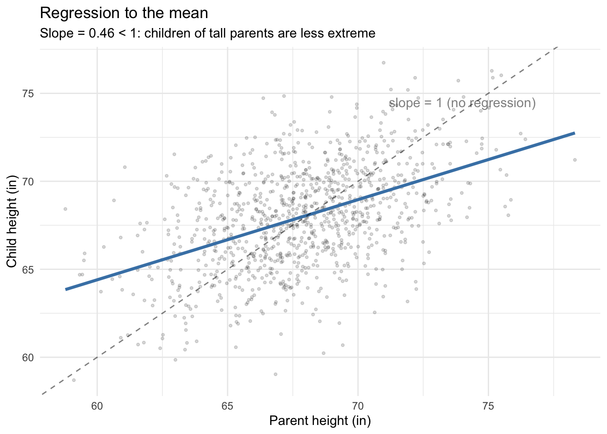
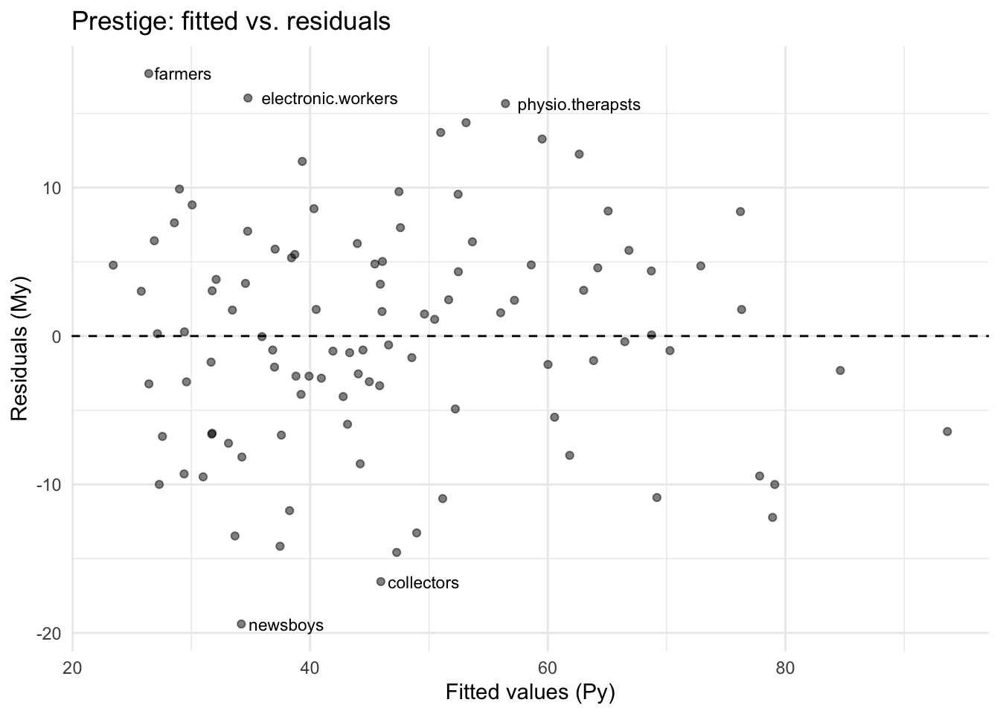

library(ggplot2)
library(carData)
options(digits = 3)
tr <- function(M) sum(diag(M)) # R has no built-in trace3. Multivariate OLS
Deriving and computing the OLS estimator
The OLS estimator \(\hat\beta = (X'X)^{-1}X'y\) is a matrix formula. Every piece of it — the transpose, the product, the inverse — has a direct R function. This chapter builds OLS from those building blocks, first geometrically in two dimensions, then in full matrix form with real data.
Questions this chapter answers:
- What R functions implement matrix operations, and how does
crossprod()relate to the normal equations? - What is the geometry of OLS — why is regression a projection?
- How do we derive \(\hat\beta = (X'X)^{-1}X'y\) from the minimization of SSE?
- How do standard errors arise from \(s_e^2(X'X)^{-1}\), and what makes them precise or imprecise?
1 R’s matrix toolkit
Before deriving anything, here are the operations we’ll use throughout.
A <- matrix(c(2, 1, 1, 3), nrow = 2)
A [,1] [,2]
[1,] 2 1
[2,] 1 3# 1. Transpose: t()
t(A) [,1] [,2]
[1,] 2 1
[2,] 1 3# 2. Matrix multiply: %*% (not * which is element-wise)
B <- matrix(c(1, 0, -1, 2), nrow = 2)
A %*% B [,1] [,2]
[1,] 2 0
[2,] 1 5# 3. Inverse: solve()
solve(A) [,1] [,2]
[1,] 0.6 -0.2
[2,] -0.2 0.4A %*% solve(A) # identity [,1] [,2]
[1,] 1.00e+00 0
[2,] -1.11e-16 1# 4. Trace: sum(diag())
tr(A) # sum of diagonal elements[1] 5# 5. Eigendecomposition: eigen()
eigen(A)eigen() decomposition
$values
[1] 3.62 1.38
$vectors
[,1] [,2]
[1,] 0.526 -0.851
[2,] 0.851 0.526# 6. Determinant: det()
det(A)[1] 5# 7. Cross product shortcuts
x_vec <- c(1, 2, 3)
y_vec <- c(4, 5, 6)
c(manual = sum(x_vec * y_vec),
crossprod = as.numeric(crossprod(x_vec, y_vec))) manual crossprod
32 32 crossprod(X) computes \(X'X\) faster than t(X) %*% X, and crossprod(X, y) computes \(X'y\). We’ll use these constantly.
2 Geometry: projection in two dimensions
You’re used to plotting data with variables on the axes — one axis for \(X\), one for \(Y\), and each point is an observation. The geometric view of regression flips this: each axis is an observation, and each variable is a vector. A variable with \(n\) observations is a vector in \(\mathbb{R}^n\).
Why think this way? Because regression asks: among all scalar multiples of \(\mathbf{x}\) (all predictions of the form \(b\mathbf{x}\)), which one is closest to \(\mathbf{y}\)? That’s a projection — dropping a perpendicular from \(\mathbf{y}\) onto the line spanned by \(\mathbf{x}\).
With just two observations, we can see this on a page. Suppose we survey two students: we record how long each spent on homework (\(\mathbf{h}\)) and how long reading the textbook (\(\mathbf{t}\)). Each variable is a 2-vector, and we can plot both in \(\mathbb{R}^2\):
# Student 1: 3 hrs homework, 2.5 hrs reading
# Student 2: 5 hrs homework, 2 hrs reading
h <- c(3, 5) # outcome: homework time
tt <- c(2.5, 2) # predictor: reading timeWe want to predict \(\mathbf{h}\) using \(\mathbf{t}\): find \(b\) so that \(b\mathbf{t}\) is as close to \(\mathbf{h}\) as possible. Geometrically, \(b\mathbf{t}\) must lie on the line through \(\mathbf{t}\) (the dotted line in the plot below), and the best choice is the one where the “miss” — the residual — is perpendicular to that line.
The vector projection of \(\mathbf{h}\) onto \(\mathbf{t}\) solves this:
\[\hat{\mathbf{h}} = \frac{\mathbf{t} \cdot \mathbf{h}}{\mathbf{t} \cdot \mathbf{t}} \mathbf{t}\]
The scalar \(b = \frac{\mathbf{t} \cdot \mathbf{h}}{\mathbf{t} \cdot \mathbf{t}}\) minimizes \(\|\mathbf{h} - b\mathbf{t}\|^2\) — the sum of squared errors. This is the least squares solution, derived purely from geometry.
# The projection coefficient
b <- as.numeric(crossprod(tt, h) / crossprod(tt))
b[1] 1.71# The projected vector (fitted values)
h_hat <- b * tt
h_hat[1] 4.27 3.41And this is exactly what lm() computes when we regress \(\mathbf{h}\) on \(\mathbf{t}\) without an intercept:
# OLS without intercept gives the same b
coef(lm(h ~ tt - 1)) tt
1.71 # Fitted values = the projection
cbind(projection = h_hat, fitted = fitted(lm(h ~ tt - 1))) projection fitted
1 4.27 4.27
2 3.41 3.41The residual \(\mathbf{e} = \mathbf{h} - \hat{\mathbf{h}}\) is orthogonal to \(\mathbf{t}\) — their dot product is zero:
e_vec <- h - h_hat
as.numeric(crossprod(tt, e_vec))[1] -4.44e-16This orthogonality is the geometric content of the normal equations \(X'e = 0\). Here’s the full picture:
df_arrows <- data.frame(
x0 = c(0, 0, 0, h_hat[1]),
y0 = c(0, 0, 0, h_hat[2]),
x1 = c(h[1], tt[1], h_hat[1], h[1]),
y1 = c(h[2], tt[2], h_hat[2], h[2]),
label = c("h (outcome)", "t (regressor)", "h-hat (fitted)", "e (residual)"),
color = c("black", "gray50", "forestgreen", "tomato")
)
slope_t <- tt[2] / tt[1]
ggplot() +
geom_abline(intercept = 0, slope = slope_t, linetype = "dotted", alpha = 0.3) +
geom_segment(data = df_arrows,
aes(x = x0, y = y0, xend = x1, yend = y1, color = label),
arrow = arrow(length = unit(0.15, "inches")),
linewidth = 1.1) +
scale_color_manual(values = c("h (outcome)" = "black",
"t (regressor)" = "gray50",
"h-hat (fitted)" = "forestgreen",
"e (residual)" = "tomato"),
name = "") +
coord_fixed(xlim = c(-1, 5), ylim = c(-1, 6)) +
labs(x = "Observation 1", y = "Observation 2",
title = "OLS finds the closest point on the line of t to h") +
theme_minimal()
The green vector (\(\hat{\mathbf{h}}\)) is the best prediction in the “column space” of \(\mathbf{t}\), and the red vector (\(\mathbf{e}\)) is the part of \(\mathbf{h}\) that \(\mathbf{t}\) cannot explain. With \(n = 100\) observations, these vectors live in \(\mathbb{R}^{100}\) and we can’t draw them — but the geometry is identical. With multiple regressors, the “line” becomes a plane (or hyperplane), and the projection lands on the closest point in that plane.
3 Building the design matrix
The model \(y = X\beta + e\) stacks \(n\) observations into a matrix. Each row of \(X\) is one observation; each column is one variable. The first column is typically all ones (the intercept).
We’ll use the Canadian Prestige dataset: the Pineo-Porter prestige score of occupations, predicted by average education (years) and average income (dollars) of workers in each occupation.
data(Prestige)
n <- nrow(Prestige)
K <- 3 # intercept + education + income
X <- cbind(1, Prestige$education, Prestige$income)
y <- Prestige$prestige
dim(X) # n x K[1] 102 3head(X) [,1] [,2] [,3]
[1,] 1 13.1 12351
[2,] 1 12.3 25879
[3,] 1 12.8 9271
[4,] 1 11.4 8865
[5,] 1 14.6 8403
[6,] 1 15.6 11030The two fundamental products in OLS are \(X'X\) (a \(K \times K\) matrix) and \(X'y\) (a \(K \times 1\) vector):
XtX <- crossprod(X) # K x K: t(X) %*% X
XtX [,1] [,2] [,3]
[1,] 102 1095 6.93e+05
[2,] 1095 12513 8.12e+06
[3,] 693386 8121410 6.53e+09Xty <- crossprod(X, y) # K x 1: t(X) %*% y
Xty [,1]
[1,] 4777
[2,] 55326
[3,] 37748108\(X'X\) encodes the relationships among the regressors. The diagonal holds \(\sum X_k^2\) for each variable; the off-diagonals hold \(\sum X_j X_k\). Dividing by \(n\) gives the sample second-moment matrix.
4 Bivariate OLS: the formula connection
Before the matrix derivation, recall the bivariate OLS formula: \(\hat\beta_1 = \text{Cov}(X, Y)/\text{Var}(X)\). This is the sample analogue of the BLP coefficient from Chapter 2. Let’s verify it matches the matrix formula using just education as a predictor:
educ <- Prestige$education
# Formula approach
beta1_formula <- cov(educ, y) / var(educ)
beta0_formula <- mean(y) - beta1_formula * mean(educ)
# Matrix approach (2x2 system)
X_biv <- cbind(1, educ)
beta_biv <- solve(crossprod(X_biv), crossprod(X_biv, y))
# lm() approach
beta_lm <- coef(lm(prestige ~ education, data = Prestige))
cbind(formula = c(beta0_formula, beta1_formula),
matrix = beta_biv,
lm = beta_lm) formula lm
-10.73 -10.73 -10.73
educ 5.36 5.36 5.36All three give the same answer. The matrix formula \(\hat\beta = (X'X)^{-1}X'y\) generalizes the bivariate \(\text{Cov}/\text{Var}\) formula to any number of regressors.
5 Deriving OLS with matrix calculus
The sum of squared errors in matrix form is:
\[\text{SSE}(\beta) = (y - X\beta)'(y - X\beta) = \underbrace{y'y}_{\text{constant}} - \underbrace{2y'X\beta}_{\text{linear}} + \underbrace{\beta'X'X\beta}_{\text{quadratic}} \tag{1}\]
Let’s build each piece in R and verify the expansion:
beta_test <- c(0, 1, 0.001) # an arbitrary beta to test
# Direct computation
sse_direct <- as.numeric(crossprod(y - X %*% beta_test))
# Expanded form
piece1 <- as.numeric(crossprod(y)) # y'y
piece2 <- as.numeric(2 * crossprod(y, X %*% beta_test)) # 2y'Xbeta
piece3 <- as.numeric(t(beta_test) %*% XtX %*% beta_test) # beta'X'Xbeta
c(direct = sse_direct, expanded = piece1 - piece2 + piece3) direct expanded
102760 102760 Setting \(\partial \text{SSE}/\partial \beta = -2X'y + 2X'X\hat\beta = 0\) gives the normal equations:
\[X'X\hat\beta = X'y \tag{2}\]
Solving with solve():
# solve(A, b) solves the system Ax = b — better than solve(A) %*% b
beta_hat <- solve(XtX, Xty)
beta_hat [,1]
[1,] -6.84778
[2,] 4.13744
[3,] 0.00136# lm() gives the same thing
coef(lm(prestige ~ education + income, data = Prestige))(Intercept) education income
-6.84778 4.13744 0.00136 Note: solve(A, b) is preferred over solve(A) %*% b — it avoids computing the full inverse, which is slower and less numerically stable.
Theorem 1 (The OLS Estimator) The OLS estimator \(\hat\beta = (X'X)^{-1}X'y\) is the unique minimizer of \(\text{SSE}(\beta) = (y - X\beta)'(y - X\beta)\) when \(X'X\) is positive definite.
5.1 The second-order condition
The second derivative of \(\text{SSE}\) is \(2X'X\). This is a minimum when \(X'X\) is positive definite — all eigenvalues are positive:
eigen(XtX)$values[1] 6.53e+09 2.44e+03 5.83e+00All positive, confirming positive definiteness. If any eigenvalue were zero, \(X'X\) would be singular and solve() would fail.
6 What collinearity does to \(X'X\)
When a column of \(X\) is a linear combination of others, \(X'X\) loses rank:
# Add a redundant column: income2 = 2 * income
X_bad <- cbind(X, 2 * Prestige$income)
XtX_bad <- crossprod(X_bad)
det(XtX_bad) # essentially zero[1] 0eigen(XtX_bad)$values # last eigenvalue collapses[1] 3.27e+10 2.44e+03 5.83e+00 4.55e-13In practice, near-collinearity (very small but nonzero eigenvalues) inflates standard errors without crashing solve(). The condition number — ratio of largest to smallest eigenvalue — measures how close to singular:
evals <- eigen(XtX)$values
c(largest = evals[1], smallest = evals[K], condition = evals[1] / evals[K]) largest smallest condition
6.53e+09 5.83e+00 1.12e+09 R’s lm() handles exact collinearity by dropping the redundant column:
coef(lm(prestige ~ education + income + I(2 * income), data = Prestige)) (Intercept) education income I(2 * income)
-6.84778 4.13744 0.00136 NA
WarningNear-Collinearity Inflates Standard Errors
When columns of \(X\) are nearly linearly dependent, \(X'X\) has a near-zero eigenvalue, making \((X'X)^{-1}\) very large. This inflates the variance of \(\hat\beta\) without causing solve() to fail — standard errors balloon silently. Check the condition number of \(X'X\) to detect this.
7 The projection matrix
The projection matrix \(P = X(X'X)^{-1}X'\) maps any \(n\)-vector onto the column space of \(X\). In two dimensions (our earlier example), it projected \(\mathbf{h}\) onto the line of \(\mathbf{t}\). With \(K = 3\) regressors, it projects \(\mathbf{y}\) onto a 3-dimensional subspace of \(\mathbb{R}^n\).
P <- X %*% solve(XtX) %*% t(X)
dim(P) # n x n[1] 102 102mod <- lm(prestige ~ education + income, data = Prestige)Definition 1 (Projection (Hat) Matrix) The projection matrix \(P = X(X'X)^{-1}X'\) maps any \(n\)-vector onto the column space of \(X\). It is symmetric (\(P' = P\)) and idempotent (\(P^2 = P\)), with eigenvalues in \(\{0, 1\}\) and \(\text{tr}(P) = K\).
Every property of \(P\) corresponds to a matrix operation:
# P*y = fitted values
all.equal(as.vector(P %*% y), as.numeric(fitted(mod)))[1] TRUE# Symmetric: t(P) = P
all.equal(t(P), P)[1] TRUE# Idempotent: P %*% P = P (projecting twice = projecting once)
all.equal(P %*% P, P)[1] TRUE# P*X = X (X is already in its own column space)
all.equal(P %*% X, X, check.attributes = FALSE)[1] TRUE7.1 What idempotency means for eigenvalues
If \(Pv = \lambda v\), then \(P^2 v = \lambda^2 v\). But \(P^2 = P\), so \(\lambda^2 = \lambda\), which means \(\lambda \in \{0, 1\}\):
eig_P <- eigen(P)$values
table(round(eig_P, 10))
0 1
99 3 \(K\) eigenvalues equal 1 (the column space of \(X\)) and \(n - K\) equal 0 (the null space). The trace counts the 1s:
c(trace_P = tr(P), K = K)trace_P K
3 3 7.2 Projection onto the intercept
The simplest projection is onto a column of ones: \(P_1 = \mathbf{1}(\mathbf{1}'\mathbf{1})^{-1}\mathbf{1}' = \frac{1}{n}\mathbf{1}\mathbf{1}'\). This projects every observation onto the sample mean:
ones <- rep(1, n)
P1 <- outer(ones, ones) / n # outer product: 1*1' / n
# P1 * y = sample mean for every observation
all.equal(as.vector(P1 %*% y), rep(mean(y), n))[1] TRUEEvery additional regressor refines this baseline: the full \(P\) starts from the mean and adds the directions explained by the other columns of \(X\).
8 The annihilator matrix
The annihilator \(M = I_n - P\) projects onto the orthogonal complement — the part of \(y\) that \(X\) cannot explain:
M <- diag(n) - P
# M*y = residuals
all.equal(as.vector(M %*% y), as.numeric(resid(mod)))[1] TRUE# Idempotent and symmetric
all.equal(M %*% M, M)[1] TRUEall.equal(t(M), M)[1] TRUE# M annihilates X: M*X = 0
max(abs(M %*% X))[1] 4.82e-11Definition 2 (Annihilator Matrix) The annihilator \(M = I_n - P\) projects onto the orthogonal complement of the column space of \(X\). It satisfies \(MX = 0\) (annihilates \(X\)), is idempotent and symmetric, and has \(\text{tr}(M) = n - K\).
Eigenvalues are complementary to \(P\): \(n - K\) ones and \(K\) zeros:
c(trace_M = tr(M), n_minus_K = n - K) trace_M n_minus_K
99 99 The demeaning matrix \(M_1 = I - P_1\) is a special case — it subtracts the mean:
M1 <- diag(n) - P1
all.equal(as.vector(M1 %*% y), as.numeric(y - mean(y)))[1] TRUE9 Application: regression to the mean
Here’s a classic application of bivariate OLS. Galton noticed that children of unusually tall parents tend to be shorter than their parents — and children of unusually short parents tend to be taller. This “regression to the mean” is not a causal mechanism; it’s a consequence of the BLP slope being less than 1 when the correlation is less than 1.
# Simulate parent-child heights (jointly normal)
set.seed(307)
n_ht <- 1000
rho <- 0.5 # correlation between parent and child height
library(MASS)
heights <- mvrnorm(n_ht, mu = c(68, 68),
Sigma = matrix(c(9, rho * 9, rho * 9, 9), 2, 2))
parent_ht <- heights[, 1]
child_ht <- heights[, 2]
# OLS by matrix formula
X_ht <- cbind(1, parent_ht)
beta_ht <- solve(crossprod(X_ht), crossprod(X_ht, child_ht))
beta_ht [,1]
37.065
parent_ht 0.456The slope is \(\hat\beta_1 \approx\) 0.46, less than 1. So a parent who is 1 inch above average has a child who is only about 0.46 inches above average — regression toward the mean.
df_ht <- data.frame(parent = parent_ht, child = child_ht)
ggplot(df_ht, aes(parent, child)) +
geom_point(alpha = 0.15, size = 0.8) +
geom_smooth(method = "lm", se = FALSE, color = "steelblue", linewidth = 1.2) +
geom_abline(slope = 1, intercept = 0, linetype = "dashed", alpha = 0.5) +
annotate("text", x = 74, y = 74.5, label = "slope = 1 (no regression)", alpha = 0.5) +
labs(x = "Parent height (in)", y = "Child height (in)",
title = "Regression to the mean",
subtitle = paste0("Slope = ", round(beta_ht[2], 2),
" < 1: children of tall parents are less extreme")) +
theme_minimal()`geom_smooth()` using formula = 'y ~ x'
The tallest parents (above the 95th percentile) have children who are closer to the mean:
tall <- parent_ht > quantile(parent_ht, 0.95)
c(parent_mean = mean(parent_ht[tall]),
child_mean = mean(child_ht[tall]),
difference = mean(parent_ht[tall]) - mean(child_ht[tall]))parent_mean child_mean difference
74.19 71.15 3.04 10 Residuals vs. disturbances
The true model is \(y = X\beta + e\) where \(e\) is unobservable. The residuals \(\hat{e} = My\) relate to the disturbances through:
\[\hat{e} = My = M(X\beta + e) = \underbrace{MX}_{= 0}\beta + Me = Me\]
Let’s simulate to see this. We know \(\beta\) and \(e\) because we generate the data:
set.seed(307)
n_sim <- 100
K_sim <- 2
X_sim <- cbind(1, rnorm(n_sim))
beta_true <- c(2, 3)
e_true <- rnorm(n_sim, sd = 2)
y_sim <- X_sim %*% beta_true + e_true
# Build M for this design
P_sim <- X_sim %*% solve(crossprod(X_sim)) %*% t(X_sim)
M_sim <- diag(n_sim) - P_sim
# Residuals = M * disturbances
e_hat <- as.vector(M_sim %*% y_sim)
all.equal(e_hat, as.vector(M_sim %*% e_true))[1] TRUE# Residuals have smaller variance — M zeroes out K dimensions
c(var_disturbances = var(e_true), var_residuals = var(e_hat))var_disturbances var_residuals
4.5 4.5 11 Estimating \(\sigma^2\): the trace trick
The natural estimator \(\hat\sigma^2 = \hat{e}'\hat{e}/n\) is biased downward because \(\hat{e}'\hat{e} = e'Me \leq e'e\) (\(M\) is positive semi-definite). The unbiased estimator divides by \(n - K\).
The proof is a chain of matrix operations. Every step translates to R:
# Step 1: e'Me is a scalar = its own trace
scalar_form <- as.numeric(t(e_true) %*% M_sim %*% e_true)
trace_form <- tr(M_sim %*% tcrossprod(e_true)) # tr(M * ee')
c(scalar = scalar_form, trace = trace_form)scalar trace
445 445 # Step 2: E[ee'] = sigma^2 * I, so E[tr(Mee')] = sigma^2 * tr(M)
# tr(M) = n - K, so E[e'hat * e'hat] = sigma^2 * (n - K)
c(trace_M = tr(M_sim), n_minus_K = n_sim - K_sim) trace_M n_minus_K
98 98
NoteThe \(n - K\) Divisor
The unbiased variance estimator divides by \(n - K\) (not \(n\)) because the residuals live in an \((n - K)\)-dimensional subspace. The \(K\) “lost” dimensions are consumed by estimating \(\hat\beta\). This is the matrix version of Bessel’s correction.
This is why the unbiased estimator is \(s_e^2 = \hat{e}'\hat{e}/(n-K)\):
# Back to the Prestige data
e_hat_prestige <- resid(mod)
sigma2_biased <- as.numeric(crossprod(e_hat_prestige)) / n
sigma2_unbiased <- as.numeric(crossprod(e_hat_prestige)) / (n - K)
c(biased = sigma2_biased,
unbiased = sigma2_unbiased,
R_sigma2 = sigma(mod)^2) biased unbiased R_sigma2
59.2 61.0 61.0 The underestimation shows up in the eigenvalues of \(M\): \(n - K\) eigenvalues are 1, and \(K\) are 0. The residuals live in an \((n-K)\)-dimensional subspace:
eig_M <- round(eigen(M)$values, 10)
c(eigenvalues_equal_1 = sum(eig_M == 1),
eigenvalues_equal_0 = sum(eig_M == 0))eigenvalues_equal_1 eigenvalues_equal_0
99 3 12 Variance of \(\hat\beta\): building \(s_e^2(X'X)^{-1}\)
Under homoskedasticity, \(\text{Var}(\hat\beta|X) = \sigma^2(X'X)^{-1}\). Each piece is a matrix operation:
# Step 1: (X'X)^{-1}
XtX_inv <- solve(XtX)
XtX_inv [,1] [,2] [,3]
[1,] 1.70e-01 -1.64e-02 2.35e-06
[2,] -1.64e-02 2.00e-03 -7.41e-07
[3,] 2.35e-06 -7.41e-07 8.24e-10# Step 2: multiply by s_e^2
vcov_manual <- sigma(mod)^2 * XtX_inv
# Step 3: compare to R
all.equal(vcov_manual, vcov(mod), check.attributes = FALSE)[1] TRUEStandard errors are the square roots of the diagonal:
se_manual <- sqrt(diag(vcov_manual))
se_R <- coef(summary(mod))[, "Std. Error"]
cbind(manual = se_manual, R = se_R) manual R
(Intercept) 3.218977 3.218977
education 0.348912 0.348912
income 0.000224 0.00022412.1 Why \((X'X)^{-1}\) determines precision
The eigenvalues of \((X'X)^{-1}\) are the reciprocals of those of \(X'X\). Large eigenvalues of \(X'X\) (strong signal) become small eigenvalues of \((X'X)^{-1}\) (precise estimates). Near-collinearity creates a tiny eigenvalue in \(X'X\), which inflates variance:
eig_XtX <- eigen(XtX)$values
eig_inv <- eigen(XtX_inv)$values
cbind(XtX = eig_XtX, XtX_inv = eig_inv, product = eig_XtX * eig_inv) XtX XtX_inv product
[1,] 6.53e+09 1.71e-01 1.12e+09
[2,] 2.44e+03 4.10e-04 1.00e+00
[3,] 5.83e+00 1.53e-10 8.93e-10The products are all 1: the eigenvalues invert exactly.
13 Application: the Prestige regression
Let’s interpret the full regression. Education and income both predict occupational prestige:
summary(mod)
Call:
lm(formula = prestige ~ education + income, data = Prestige)
Residuals:
Min 1Q Median 3Q Max
-19.404 -5.331 0.015 4.980 17.689
Coefficients:
Estimate Std. Error t value Pr(>|t|)
(Intercept) -6.847779 3.218977 -2.13 0.036 *
education 4.137444 0.348912 11.86 < 2e-16 ***
income 0.001361 0.000224 6.07 2.4e-08 ***
---
Signif. codes: 0 '***' 0.001 '**' 0.01 '*' 0.05 '.' 0.1 ' ' 1
Residual standard error: 7.81 on 99 degrees of freedom
Multiple R-squared: 0.798, Adjusted R-squared: 0.794
F-statistic: 196 on 2 and 99 DF, p-value: <2e-16The coefficient on education (4.1) says: holding income constant, one additional year of average education is associated with about 4.1 points more prestige. The coefficient on income (0.001) is small in magnitude because income is in dollars — a $1,000 increase predicts about 1.4 points.
Let’s see which occupations the model fits well and poorly, using the projection and annihilator:
Prestige$fitted <- as.vector(P %*% y)
Prestige$resid <- as.vector(M %*% y)
# Largest positive residuals: more prestige than education+income predict
head(Prestige[order(-Prestige$resid), c("education", "income", "prestige", "fitted", "resid")], 5) education income prestige fitted resid
farmers 6.84 3643 44.1 26.4 17.7
electronic.workers 8.76 3942 50.8 34.8 16.0
physio.therapsts 13.62 5092 72.1 56.4 15.7
medical.technicians 12.79 5180 67.5 53.1 14.4
nurses 12.46 4614 64.7 51.0 13.7# Largest negative residuals: less prestige than predicted
head(Prestige[order(Prestige$resid), c("education", "income", "prestige", "fitted", "resid")], 5) education income prestige fitted resid
newsboys 9.62 918 14.8 34.2 -19.4
collectors 11.20 4741 29.4 45.9 -16.5
file.clerks 12.09 3016 32.7 47.3 -14.6
service.station.attendant 9.93 2370 23.3 37.5 -14.2
bartenders 8.50 3930 20.2 33.7 -13.5ggplot(Prestige, aes(fitted, resid)) +
geom_point(alpha = 0.5) +
geom_hline(yintercept = 0, linetype = "dashed") +
geom_text(data = Prestige[abs(Prestige$resid) > 15, ],
aes(label = rownames(Prestige)[abs(Prestige$resid) > 15]),
hjust = -0.1, size = 3) +
labs(x = "Fitted values (Py)", y = "Residuals (My)",
title = "Prestige: fitted vs. residuals") +
theme_minimal()
14 ANOVA as inner products
The decomposition \(y = \hat{y} + \hat{e}\) is orthogonal. In matrix terms, \(\hat{y}'\hat{e} = (Py)'(My) = y'PMy = 0\):
as.numeric(crossprod(fitted(mod), resid(mod)))[1] -1.07e-13After centering, the inner products give sums of squares:
# SST = ||M1 * y||^2 (total variation around the mean)
SST <- as.numeric(crossprod(M1 %*% y))
# SSR = ||(P - P1) * y||^2 (variation explained by regressors beyond the mean)
SSR <- as.numeric(crossprod(fitted(mod) - mean(y)))
# SSE = ||M * y||^2 (unexplained variation)
SSE <- as.numeric(crossprod(resid(mod)))
c(SST = SST, SSR_plus_SSE = SSR + SSE) SST SSR_plus_SSE
29895 29895 # Cross term is zero when X includes a constant
as.numeric(crossprod(fitted(mod) - mean(y), resid(mod)))[1] 8.74e-1315 \(R^2\)
\(R^2 = \text{SSR}/\text{SST} = 1 - \text{SSE}/\text{SST}\):
c(R2 = SSR / SST,
R2_alt = 1 - SSE / SST,
R_reports = summary(mod)$r.squared) R2 R2_alt R_reports
0.798 0.798 0.798 Adding regressors can only increase \(R^2\), even if the variable is noise. The adjusted \(R^2\) penalizes for \(K\):
set.seed(42)
Prestige$noise <- rnorm(n)
mod_noise <- lm(prestige ~ education + income + noise, data = Prestige)
c(R2_original = summary(mod)$r.squared,
R2_with_noise = summary(mod_noise)$r.squared,
adj_R2_original = summary(mod)$adj.r.squared,
adj_R2_with_noise = summary(mod_noise)$adj.r.squared) R2_original R2_with_noise adj_R2_original adj_R2_with_noise
0.798 0.799 0.794 0.792 Raw \(R^2\) ticks up; adjusted \(R^2\) drops — correctly penalizing the useless variable.
\(R^2\) measures descriptive fit, not causal validity. Typical values: cross-sectional micro data \(\approx 0.2\)–\(0.4\), aggregate time series \(\approx 0.7\)–\(0.9\).
16 Naming conventions: a warning
Different textbooks use SSE and SSR with opposite meanings. In this course (following Hansen), SSR is “regression” (explained) and SSE is “error” (unexplained). Some texts reverse these. The math is always \(\text{SST} = \text{explained} + \text{unexplained}\).
17 Summary
The OLS estimator is a sequence of matrix operations:
| Math | R | What it does |
|---|---|---|
| \(X'X\) | crossprod(X) |
Gram matrix of regressors |
| \((X'X)^{-1}\) | solve(crossprod(X)) |
Inverse |
| \(\hat\beta = (X'X)^{-1}X'y\) | solve(crossprod(X), crossprod(X, y)) |
OLS coefficients |
| \(P = X(X'X)^{-1}X'\) | X %*% solve(crossprod(X)) %*% t(X) |
Projection (hat matrix) |
| \(M = I - P\) | diag(n) - P |
Annihilator |
| \(\text{tr}(M)\) | sum(diag(M)) |
Degrees of freedom (\(n - K\)) |
| eigenvalues of \(P\) | eigen(P)$values |
All 0 or 1 |
| \(s_e^2(X'X)^{-1}\) | sigma(mod)^2 * solve(crossprod(X)) |
Variance-covariance of \(\hat\beta\) |
| \(\text{SE}(\hat\beta_k)\) | sqrt(diag(vcov(mod))) |
Standard errors |
Key facts:
- OLS is projection: \(\hat{y} = Py\) is the closest point to \(y\) in the column space of \(X\), and \(\hat{e} = My\) is the orthogonal residual.
- \(P\) and \(M\) are symmetric and idempotent, with eigenvalues in \(\{0, 1\}\).
- \(\text{tr}(P) = K\) and \(\text{tr}(M) = n - K\) count dimensions.
- The trace trick proves \(s_e^2\) is unbiased: \(\mathbb{E}[e'Me] = \sigma^2 \text{tr}(M) = \sigma^2(n-K)\).
- Eigenvalues of \((X'X)^{-1}\) are reciprocals of those of \(X'X\): near-collinearity inflates variance.
- Regression to the mean is a consequence of \(\hat\beta_1 < 1\) when \(|\rho| < 1\).
Next: Sensitivity and Leverage — the Frisch-Waugh-Lovell theorem, partial \(R^2\), and influential observations.